| |||||||
Frans af Assissis bøn om fred | Fadervor | Salme 8 | ||||
| 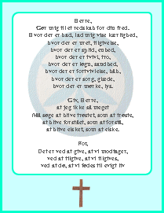 | 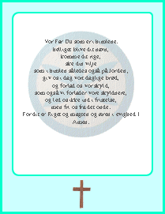 | 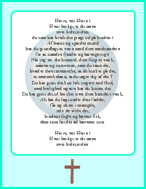 | ||||
Jabes Bøn | Forbønner | |||
| 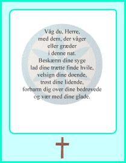 | ||||||
| 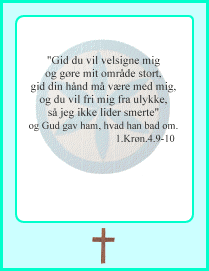 | ||||||
- - - - - Ensomhed og afmagt - - - - - | ||
| 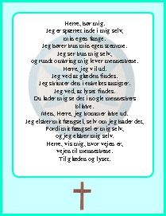 | 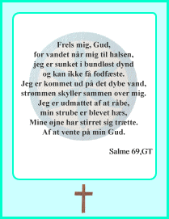 | 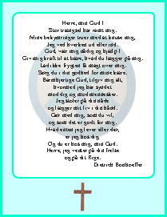 | ||||
Ensomhed og afmagt | At være ung | |||||
At være gammel | ||||||
| 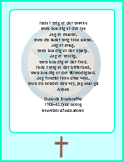 | 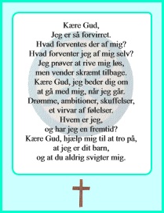 | 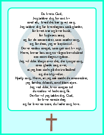 | ||||
Aftenbøn | Aftenbøn | Samliv og ægteskab | ||||
| 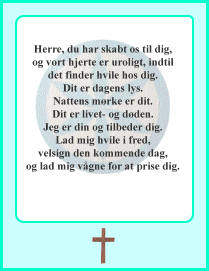 | 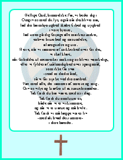 | 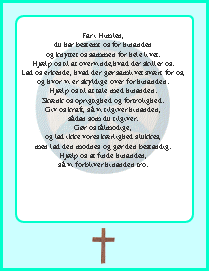 | ||||
De fleste af bønnerne er fra Den Danske Salmebogs bønnebog.
| ||
| ||